Net Profit counts collected money only
₱49,890 profit on a period with zero completed stays became ₱7,390 collected, with the ₱42,500 pipeline shown separately as an estimate.
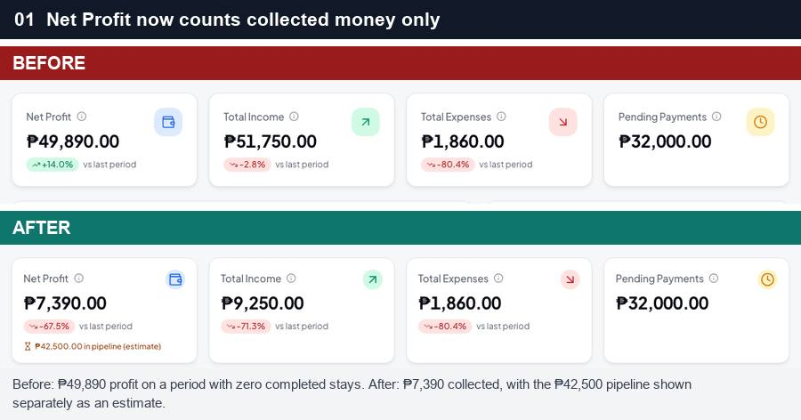
Every changed surface, annotated. Click an image to open the full-size pair. Values come from the seeded November 2026 period.
₱49,890 profit on a period with zero completed stays became ₱7,390 collected, with the ₱42,500 pipeline shown separately as an estimate.

Before, searching dropped Net Profit from ₱49,890 to ₱7,390 and emptied the charts. After, the cards stay on the period while only the ledger empties.
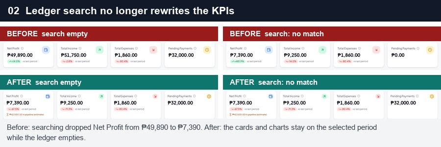
Pending amounts are amber, completed income is green, and the raw “Booking 5eed1000…” line is gone.
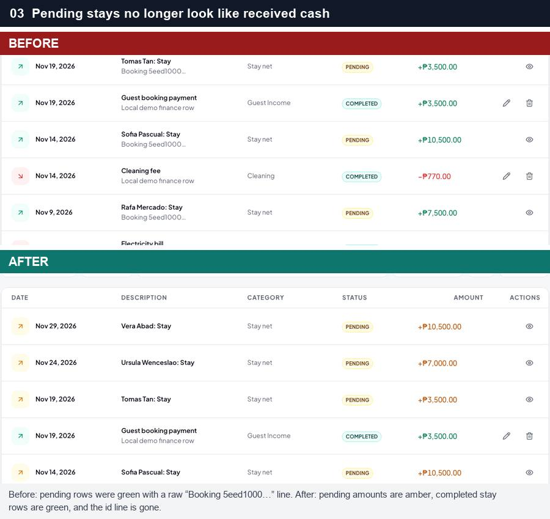
The series lookup no longer 400s, so “This occurrence only” is back and a schedule change is no longer implied.
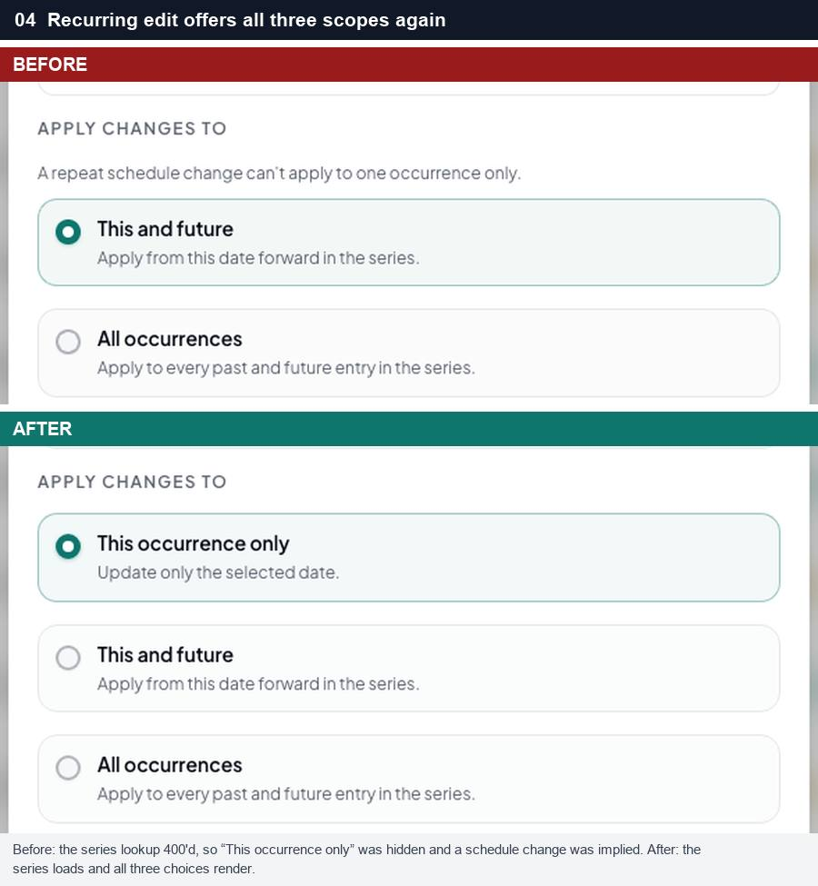
“Daily at 12:00 PM” is first and checked, with an inline warning when Finance Telegram is not connected.
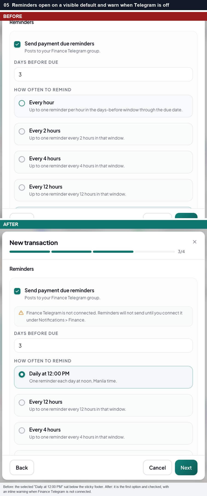
Category and Date stack on phone, and the amount field opens empty with a placeholder.
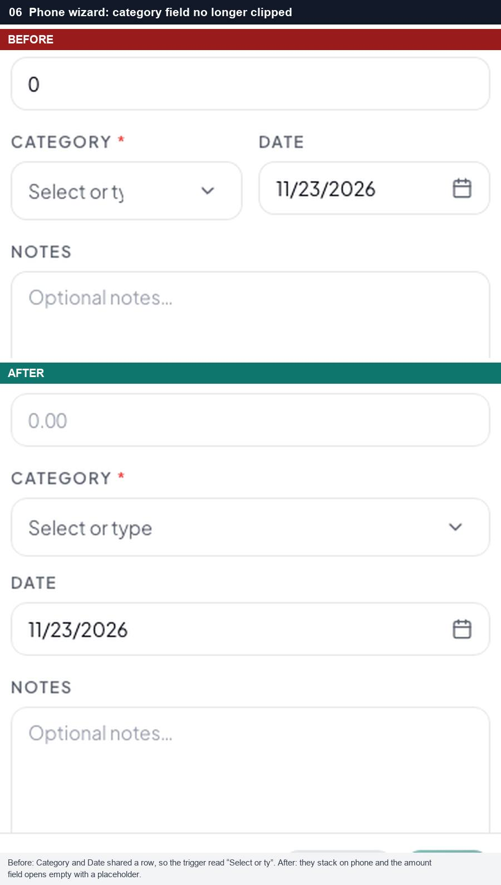
The page reserves space, so the last card and its actions scroll clear of the floating button.
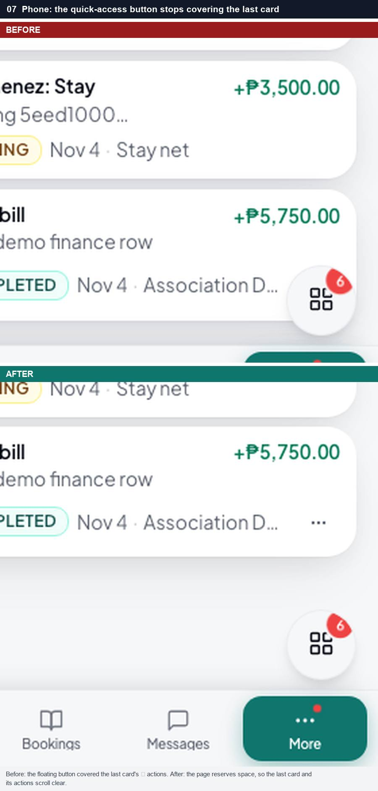
All four values fit and share one baseline instead of truncating with “Pending Payments” wrapped.
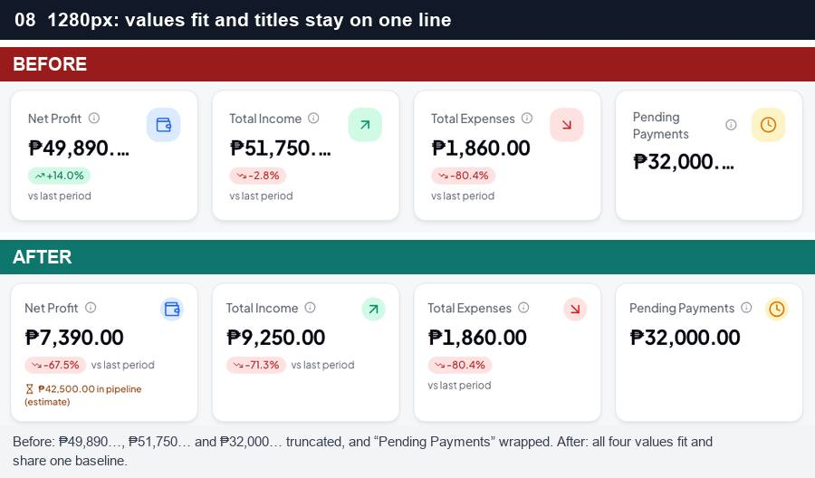
“Apply from this date forward…” became “Delete this date and every later occurrence…”.
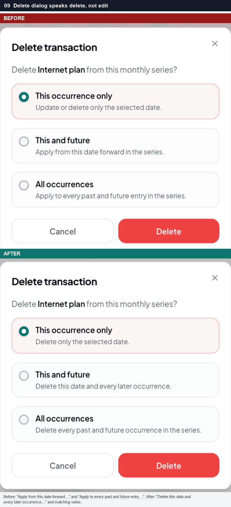
The pipeline note, amber pending amounts and recovered axis labels carry into dark mode.
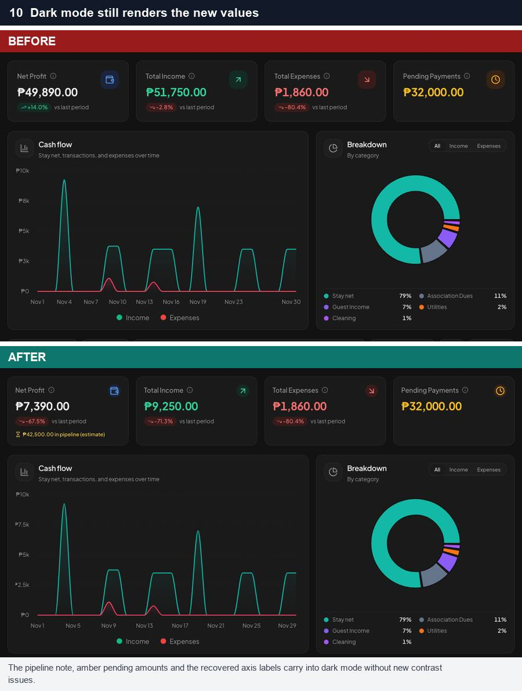
Pending cards use amber amounts and no longer print a truncated booking id.
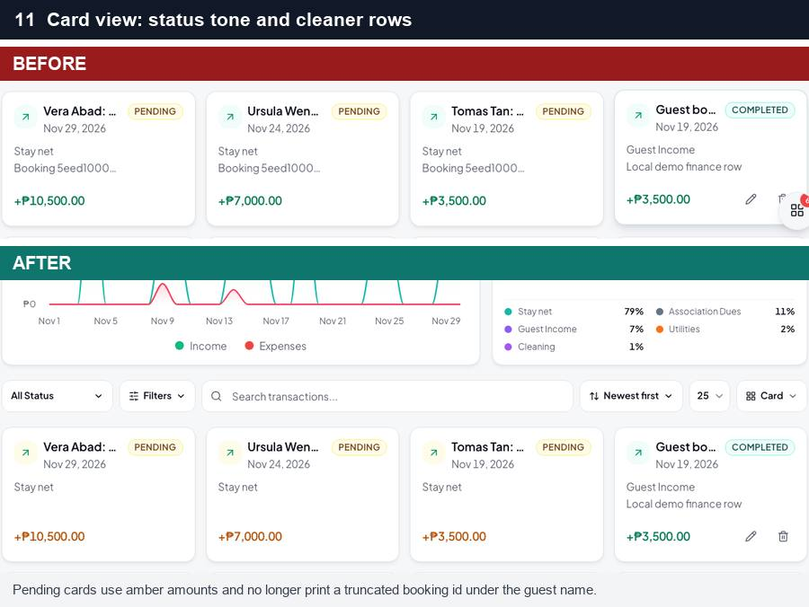
Raw captures: after/ (17 screens at 390, 768, 1280, 1440 and dark). Evidence for the original review: screenshots/.